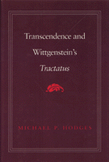

Unifies Wittgenstein's early philosophy in terms of the notion of transcendence
Unifies Wittgenstein's early philosophy in terms of the notion of transcendence


 Unifies Wittgenstein's early philosophy in terms of the notion of transcendence
Unifies Wittgenstein's early philosophy in terms of the notion of transcendence

|  |
Transcendence and Wittgenstein's TractatusMichael P. Hodgescloth EAN: 978-0-87722-692-5 (ISBN: 0-87722-692-X) |
"[R]eaders will surely be interested in how Hodges interprets Wittgensteins's views on ethics, religion, and aesthetics. Hodges has written an accessible account of a permanently intriguing thinker."
—Gerald E. Myers
Although Wittgenstein claimed that his first book, the Tractatus Logico-Philosophicus, was essentially an ethical work, it has been viewed insistently as a purely logical one. His later work, Philosophical Investigations, is generally seen as presenting totally different ideas from his earlier writings. In this book, Michael Hodges shows how Wittgenstein’s later work emerged from his earlier Tractatus, and he unifies the early philosophy, both its well-known logical aspects and the lesser known ethical dimensions, in terms of the notion of transcendence.
Hodges studies the Tractatus in light of Wittgenstein’s own claim that the Philosophical Investigations can only be understood when read against the background of the Tractatus. At the heart of an understanding of the earlier work is the idea of transcendence which structures both Wittgenstein’s logical and ethical insights. Seen in terms of this notion, the rigorous unity of Wittgenstein’s early thinking becomes apparent and the gestalt shift to the later philosophy comes clearly into focus.
Michael P. Hodges is Associate Professor of Philosophy at Vanderbilt University.
© 2015 Temple University. All Rights Reserved. This page: http://www.temple.edu/tempress/titles/700_reg.html.